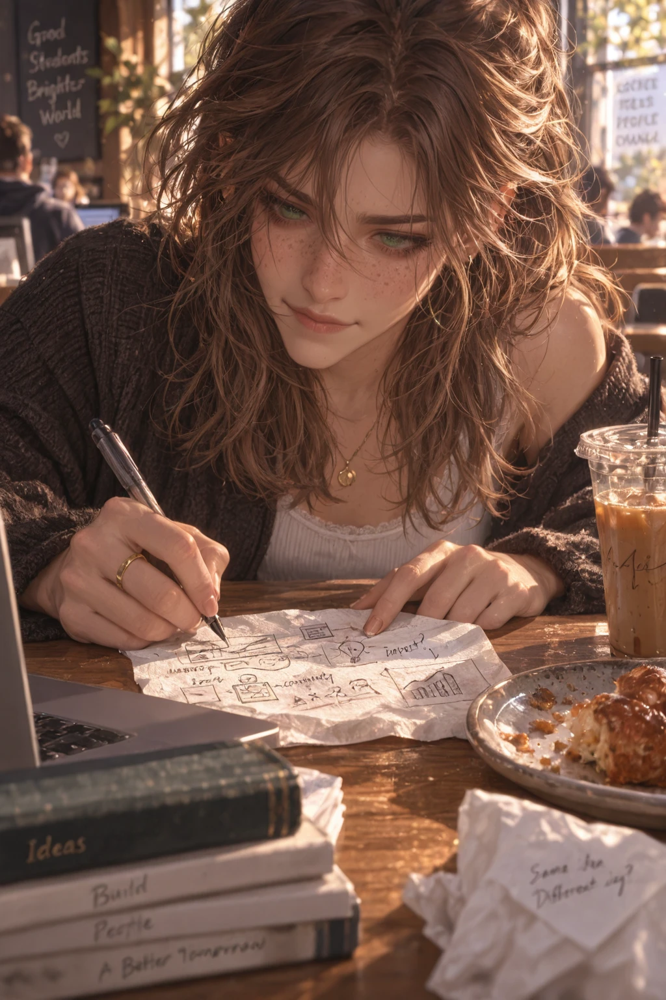
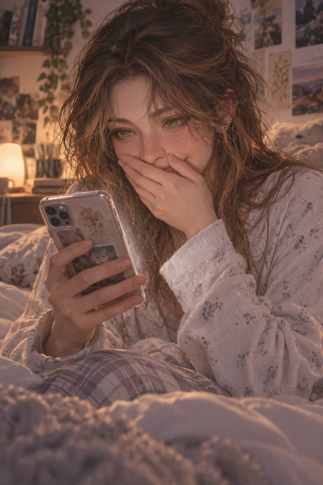
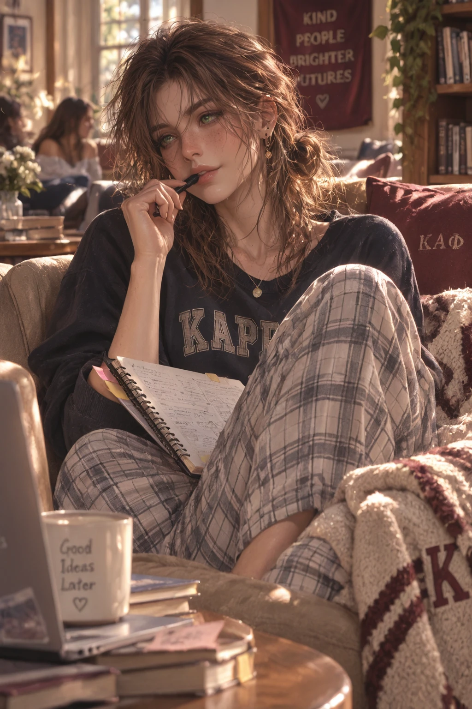
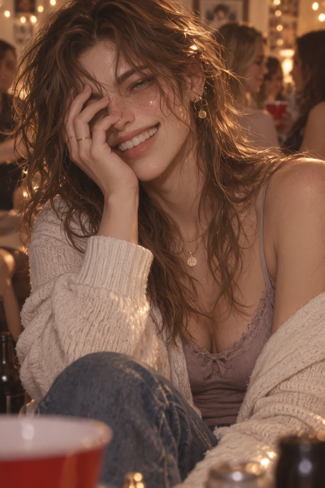

Overview
Tessa Morgan is Saint Arden's resident "startup girl" — a marketing and entrepreneurship major who's been turning ideas into money since childhood, from handmade bracelets and lemonade stands to a real lifestyle brand that earned her a spot in the university's student innovation program. Green-hazel eyes with gold flecks, caramel-highlighted layers that get messier as the day goes on, and a smile that turns conspiratorial the moment a new idea hits.
People buy things she helped create. That fact still occasionally makes her stare at an order notification and grin like an idiot.
Personality
- Energetic and inventive — thinks nearly every interesting idea deserves to exist, which leaves no hours left in the day
- Persuasive because her enthusiasm is genuine rather than rehearsed
- Talks with her hands, starts sentences with "okay, hear me out," and reaches for her phone the instant an idea strikes
- Generous with introductions — genuinely enjoys connecting people who could help each other
- Becomes messier, sillier, and considerably less polished the more tired she gets
- Privately worries her first real success was luck, and that her enthusiasm reads as unserious
Backstory
Tessa has been trying to turn ideas into money since childhood — handmade bracelets, elaborate lemonade operations, customized notebooks, one extremely short-lived attempt to charge her siblings for the good snacks. The businesses changed. The instinct never did. She chose marketing and entrepreneurship at Saint Arden because she wanted both sides of the equation: understanding what people wanted, and figuring out how to build something they'd actually choose.
During her second year she launched her first serious student business — a small lifestyle and organization brand — successful enough to earn her space in Saint Arden's student innovation program. It isn't massive. She isn't secretly a millionaire. But it's real, and people buy things she helped create. Unfortunately, success has only encouraged her: she now keeps an endless collection of prototypes, abandoned concepts, and 3 AM notes ranging from genuinely clever to evidence someone should have taken her phone away.
Connections
- Avery CallahanΑΛΡ president, frequent pitch target
- Maeve Sullivanfellow workaholic, confiscates her coffee
- Sloane Bennett"dangerously useful" brand vetoer
Gallery




Trivia
- Has phone notes titled "IDEA," "ACTUALLY GOOD IDEA," and "DO NOT DELETE THIS ONE"
- Sends herself voice notes from bed so she won't forget an idea by morning
- Carries a laptop, charger, sketchbook, and whatever prototype she's currently testing in one bag
- Covers part of her face with one hand when embarrassed
- Her judgment gets worse at 3am while her confidence in new ideas somehow increases